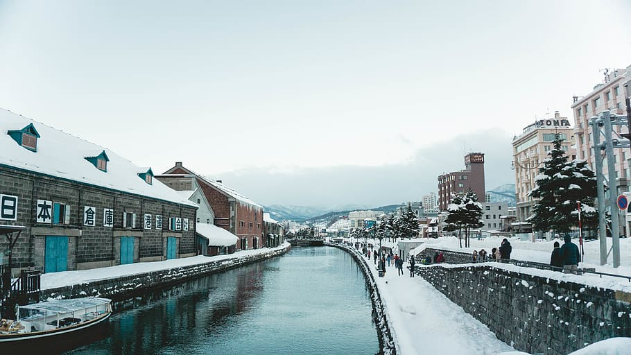
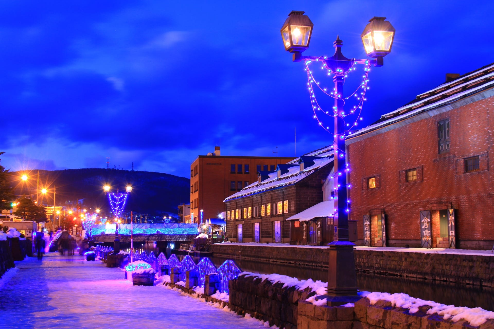
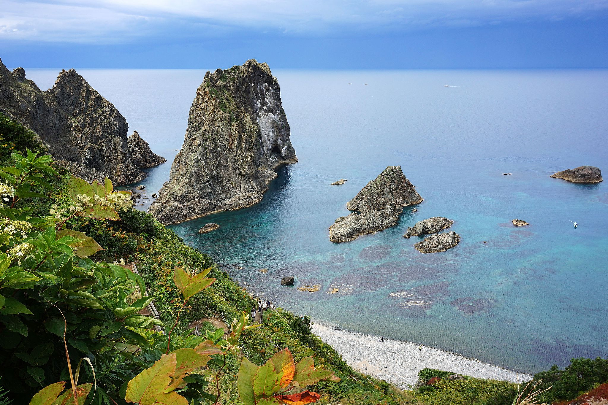

Hokkaido, a ilha mais ao norte do Japão, é um lugar onde o rigor do inverno se mistura com paisagens de tirar o fôlego. Conhecida por suas vastas planícies, florestas densas e montanhas cobertas de neve, oferece um contraste fascinante com o resto do Japão. Sua natureza intocada, cultura única e clima frio criam um destino que atrai aventureiros, amantes da natureza e curiosos por suas tradições, tornando Hokkaido uma verdadeira joia escondida no norte do país.


Otaru é uma cidade encantadora localizada na costa oeste de Hokkaido, Japão, conhecida pelo seu porto histórico, suas casas tradicionais e pela atmosfera acolhedora que mistura o passado e o presente de maneira única. Fundada no final do século 19, Otaru prosperou como um importante centro comercial e portuário, especialmente durante o período Meiji, quando se tornou um ponto de transbordo para mercadorias que chegavam ao Japão a partir de outros países.
Uma das características mais marcantes de Otaru é o Canal de Otaru, que, embora tenha sido originalmente construído para o transporte de mercadorias, hoje é uma das principais atrações turísticas da cidade. O canal é ladeado por antigos armazéns de tijolos vermelhos que foram transformados em lojas, cafés e museus, oferecendo aos visitantes a oportunidade de explorar a história da cidade enquanto desfrutam de uma deliciosa refeição ou compram artesanato local. O inverno em Otaru é especialmente mágico, com a cidade coberta por neve, criando uma paisagem encantadora. O famoso Festival de Neve de Otaru é uma das principais atrações do inverno, com esculturas de gelo e luzes que iluminam as ruas e o canal, transformando a cidade em um verdadeiro paraíso congelado. O ambiente acolhedor das lojas e cafés tradicionais também faz de Otaru um lugar perfeito para passeios relaxantes, onde se pode saborear doces típicos e a famosa sushi de Otaru, fresca e deliciosa devido à proximidade com o mar. Além do canal, Otaru é famosa por suas casas tradicionais de estilo ocidental, que remontam à época da sua prosperidade como porto comercial. Essas casas, construídas com influência europeia, estão espalhadas pela cidade e contribuem para o charme único de Otaru, especialmente quando cobertas pela neve no inverno. Com sua combinação de beleza natural, história rica e encantos culturais, Otaru é uma cidade que transporta os visitantes no tempo, oferecendo uma experiência única e memorável no coração de Hokkaido.

Shakotan é uma península no norte de Hokkaido, Japão, famosa por suas paisagens naturais, águas cristalinas e a tranquilidade. O "Mar de Shakotan" é conhecido por suas águas azuis intensas, ideais para mergulho e passeios de barco. A região também é lar da "Pedra de Kamui", uma formação rochosa icônica. Shakotan é famosa pela produção de frutos do mar, especialmente o caranguejo local. Oferece trilhas, mirantes e observação de vida selvagem, sendo também uma bela opção no inverno, quando a neve cobre a paisagem. É um destino calmo e encantador, ideal para quem busca uma experiência autêntica no Japão.